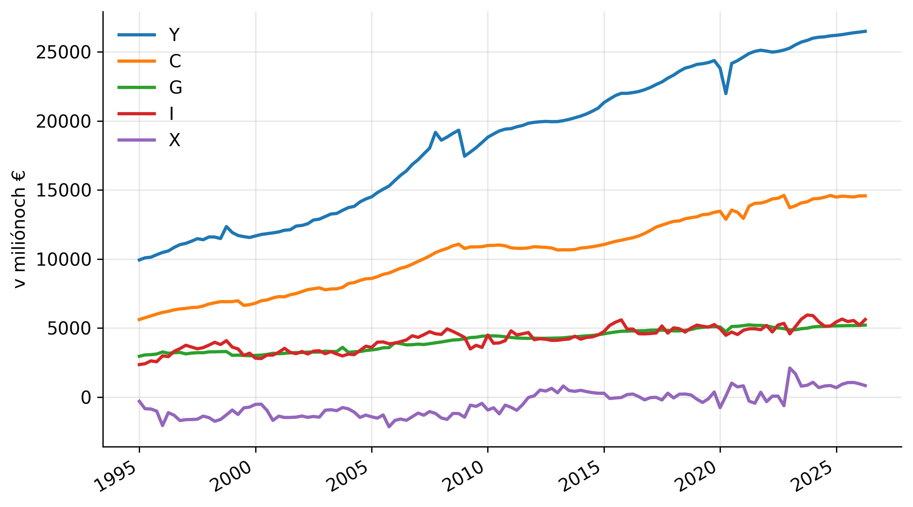
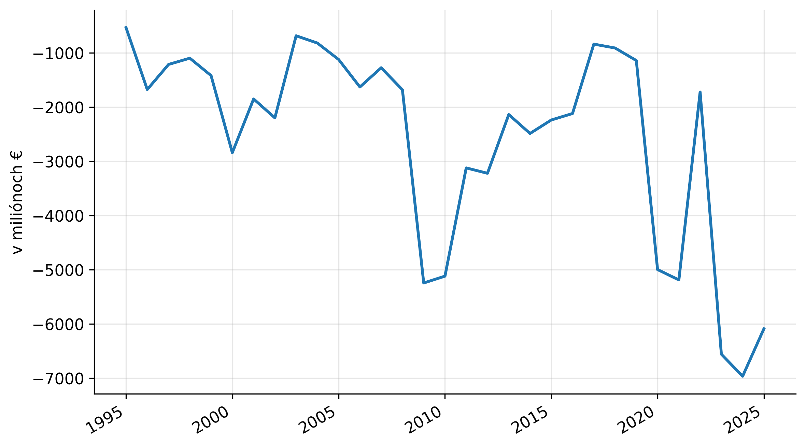
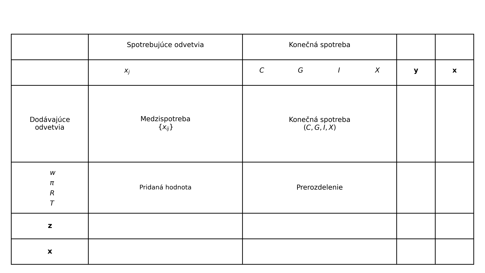
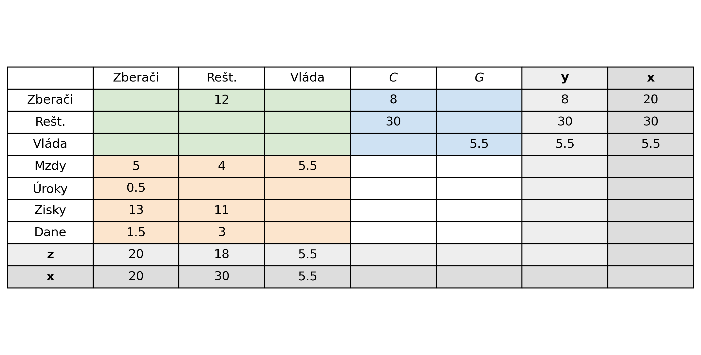
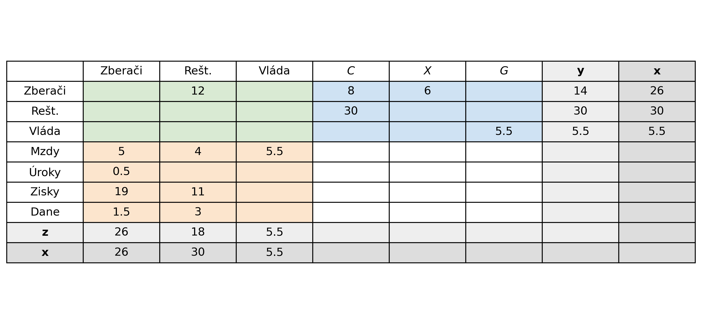

10. Systémy národných účtov a makroekonomická rovnováha#
V predchádzajúcej kapitole sme ukázali, že vo všeobecnej rovnováhe musia byť všetky trhy v ekonomike súčasne v rovnováhe. Pre každý statok sa preto agregátny dopyt rovná agregátnej ponuke a ekonomické rozhodnutia jednotlivých subjektov sú navzájom konzistentné.
Pri skúmaní reálnych ekonomík však zvyčajne neanalyzujeme každý trh samostatne. Namiesto toho jednotlivé trhy a transakcie agregujeme do väčších celkov, ako sú spotreba, investície, vládne nákupy, export alebo dôchodky jednotlivých sektorov ekonomiky.
Systémy národných účtov predstavujú sústavu identít, ktoré zachytávajú tieto agregované vzťahy. Podobne ako podmienky všeobecnej rovnováhy, aj identity národných účtov vyjadrujú rovnosť medzi rôznymi pohľadmi na tú istú ekonomickú aktivitu. Produkcia jedného subjektu je príjmom iného, výdavky jedného sektora sú príjmom iného a celkový výstup ekonomiky možno merať viacerými ekvivalentnými spôsobmi.
V nasledujúcej kapitole preto prejdeme od všeobecnej rovnováhy jednotlivých trhov k agregovanému pohľadu na ekonomiku ako celok. Predstavíme systémy národných účtov a ukážeme, ako ich identity tvoria základ makroekonomickej analýzy a modelov makroekonomickej rovnováhy.
10.1. Ekonomická aktivita#
Poznáme tri metódy ako merať ekonomickú aktivitu: výdavkovú metódu, príjmovú metódu a metódu pridanej hodnoty. Ekvivalencia týchto troch metód vyplýva z rovnovážnych vzťahov medzi jednotlivými sektormi ekonomiky a predstavuje agregovaný pohľad na všeobecnú rovnováhu.
10.1.1. Výdavková metóda#
Výdavkovou metódou meriame ekonomickú aktivitu tak, že sčítame všetky výdavky na konečnú spotrebu vyprodukovaných tovarov a služieb v ekonomike za isté časové obdobie (rok, štvrťrok …) v peňažných jednotkách (eurách). Tieto výdavky možno členiť podľa toho, kto ich nakupuje. V ekonomike sú štyri sektory: domácnosti, firmy, všetky úrovne verejnej sféry (resp. vlády) a zahraničie alebo zvyšok sveta. Hovoríme tak o konečnej spotrebe domácností, konečnej spotrebe verejnej sféry (budeme ju nazývať aj vládne nákupy), hrubé investície a čistý vývoz.
- Konečná spotreba domácností
Do konečnej spotreby domácností sa započítavajú výdavky na vyprodukované tovary a služby v peňažných jednotkách, ktoré za dané obdobie spotrebujú domácnosti. Výnimku tvoria nehnuteľnosti, ktoré sa zaraďujú do hrubých investícií.
- Hrubé investície
Hrubé investície predstavujú výdavky na tvorbu kapitálu.
Hrubé investície sú takisto vyjadrené v peňažných jednotkách v danom období. Môžeme ich členiť na fixné hrubé investície a zmenu stavu zásob.
Fixné hrubé investície sú výdavky do nových kapitálových tovarov (do strojov, zariadení alebo nehnuteľností). Tieto kapitálové tovary sú trvalé a slúžia ako vstupy produkcie v období viac rokov. Započítavajú sa tu aj nákupy nových nehnuteľností domácnosťami. Zmena stavu zásob zachytáva zmeny na skladoch firiem a obchodov za dané obdobie. Pochopiteľne, záporná hodnota tejto položky nie je nič mimoriadne.
Prívlastok „hrubé“ vyjadruje, že do investícií sa započítava nielen tvorba nového kapitálu, ale aj kapitál potrebný na nahradenie opotrebovaných kapitálových statkov.
- Odpisy
Peňažne vyjadrené opotrebenie kapitálu nazývame odpisy.
Ak od hrubých investícií odpočítame odpisy, získame čisté investície.
- Čisté investície
Čisté investície predstavujú prírastok kapitálovej zásoby ekonomiky za dané obdobie.
- Vládne nákupy
Vládne nákupy (konečná spotreba vlády) sú výdavky všetkých úrovní verejnej sféry (t. j. napr. úrad vlády, krajské úrady, polícia, armáda, verejné školy, štátne podniky, …) na tovary a služby v peňažných jednotkách za dané obdobie.
Poznámka
V makroekonómii budeme pod pojmom vláda rozumieť celý verejný sektor, nie iba vládu v politickom zmysle slova.
Do sektora vlády preto zaraďujeme všetky úrovne verejnej správy a verejné inštitúcie, napríklad ministerstvá, úrady, políciu, armádu, súdy, verejné školy, obce, mestá a ďalšie organizácie financované z verejných zdrojov.
Upozornenie
Rôzne metodiky merania výkonnosti ekonomiky sa líšia, podľa toho, či sa do hrubých investícií započítavajú iba hrubé súkromné (nákupy kapitálových tovarov súkromnými firmami a domácnosťami) alebo aj hrubé verejné investície. Americká metodika (National Income and Product Account, NIPA) vykazuje hrubé súkromné investície, do ktorých sa hrubé verejné investície nezapočítavajú. Európska metodika (Európsky systém národných účtov, ESA 2010) vykazuje hrubú tvorbu kapitálu, v ktorej sú započítané súkromné aj verejné hrubé investície.
Vládne nákupy sú podľa metodiky ESA 2010 spotrebného charakteru, hovoríme o konečnej spotrebe verejnej správy. Podľa metodiky NIPA sú tovary, ktoré nakupuje verejný sektor aj spotrebného aj kapitálového charakteru, hovoríme o vládnych nákupoch tovarov a služieb a verejných investíciách. Metodika NIPA sleduje zvlášť vládne nákupy tovarov a služieb a zvlášť verejné investície. Verejnými investíciami sa zvyšuje verejný kapitál. Odteraz pod pojmom „vláda“ budeme rozumieť všetky úrovne verejnej sféry.
Ak je ekonomika otvorená, do výdavkov na konečnú spotrebu domácností, firiem a vlády sú započítané aj nákupy dovezených tovarov a služieb. Naopak, v týchto výdavkoch nie sú započítané tovary a služby vyprodukované v ekonomike, ale vyvezené do zahraničia. Preto ešte treba odpočítať dovoz a pripočítať vývoz.
- Čistý vývoz
je rozdiel medzi vývozom a dovozom v peňažných jednotkách za dané obdobie.
Čistý vývoz je bilančná položka obchodného vzťahu so zahraničím. Nazývame ho tiež obchodná bilancia. Často sa stáva, že čistý vývoz môže dosahovať zápornú hodnotu, podobne ako zmena stavu zásob. Záporná hodnota predstavuje deficit obchodnej bilancie, kladná prebytok obchodnej bilancie so zahraničím.
Súčet konečnej spotreby domácností, vlády, hrubých investícií a čistého vývozu nazývame hrubý domáci produkt. Spôsob výpočtu rezultuje do definície výpočtu HDP.
Značenie
V makroekonomickej literatúre sa čistý vývoz zvykne označovať \(NX\). V našej učebnici by sa to mohlo pliesť s prácou \(N\). Navyše označenie iba jedným písmenom \(X\) je z praktické z matematického hľadiska.
- Hrubý domáci produkt (HDP)
Sú to peňažne vyjadrené výdavky na konečnú spotrebu všetkých tovarov a služieb vyprodukovaných na území ekonomiky v danom období.
- Čistý domáci produkt
Ak od hrubého domáceho produktu odpočítame odpisy, získame čistý domáci produkt.
Čistý domáci produkt získame aj sčítaním konečnej spotreby domácností, vlády, čistých súkromných investícií a čistého vývozu.
Poznámka
Pripomeňme, že do HDP sa započítava iba produkcia nových tovarov a služieb. Predaj už existujúcich tovarov sa do HDP nezapočítava, pretože ich hodnota bola do HDP zahrnutá už v období ich vzniku. Pri predaji ojazdeného auta sa preto do HDP môže započítať iba hodnota nových služieb súvisiacich s predajom, napríklad provízia autobazára.
Na Obr. 10.1 je zobrazený priebeh sezónne očistených reálnych štvrťročných časových radov HDP (\(Y\)) a konečnej spotreby domácnostií (\(C\)), vlády (\(G\)), investícií (\(I\)) a čistého vývozu (\(X\)). Údaje sme získali z databázy Eurostat [Eurostat26].

Obr. 10.1 Reálny HDP a jeh zložky v slovenskej ekonomike#
Zdroj: vlastné spracovanie na základe údajov Eurostatu.
Z obrázka vidíme, že najväčšou zložkou slovenského HDP je konečná spotreba domácností \(C\). Jej priebeh sa veľmi podobá priebehu HDP, avšak kolíše menej. Investície \(I\) vykazujú výraznejšie výkyvy než spotreba domácností a patria medzi najvolatilnejšie zložky agregátneho dopytu.
Vládna spotreba \(G\) je v porovnaní s ostatnými zložkami relatívne stabilná. Naopak, čistý vývoz \(X\) sa výrazne mení v čase a počas časti sledovaného obdobia dosahuje záporné hodnoty. To znamená, že hodnota dovozu prevyšovala hodnotu vývozu.
Obrázok zároveň ukazuje, že slovenská ekonomika dlhodobo rástla. Výraznejšie poklesy ekonomickej aktivity sú spojené najmä s globálnou finančnou krízou v rokoch 2008 až 2009 a pandémiou COVID-19 v roku 2020.
Je zrejmé, že jednotlivé zložky HDP sa v čase správajú odlišne. Spotreba domácností je pomerne stabilná, zatiaľ čo investície vykazujú výraznejšie výkyvy. Toto pozorovanie je v súlade s Friedmanovou hypotézou trvalého príjmu (Friedmanova hypotéza trvalého príjmu), podľa ktorej sa spotrebitelia snažia udržiavať relatívne stabilnú úroveň spotreby počas života (Spotrebiteľské vyhladzovanie).
V nasledujúcich kapitolách ukážeme, že rozdielne správanie jednotlivých makroekonomických agregátov patrí medzi základné štylizované fakty hospodárskeho cyklu.
Z obrázka možno pozorovať, že čistý vývoz bol počas značnej časti 90. rokov a začiatku 21. storočia záporný. Postupne sa však zvyšoval a po roku 2012 sa začal pohybovať prevažne v kladných hodnotách. Tento vývoj súvisel s rastúcou integráciou Slovenska do európskej ekonomiky, prílevom zahraničných investícií a rozvojom exportne orientovaného priemyslu po vstupe do EÚ.
10.1.2. Príjmová metóda#
Výdavkovou metódou sme získali HDP. Tú istú ekonomickú aktivitu možno merať aj zo strany príjmov.
Pri meraní ekonomickej výkonnosti príjmovou metódou sčítame všetky peňažne vyjadrené príjmy všetkých faktorov výroby v ekonomike v danom období.
Medzi faktory produkcie patria práca, kapitál a pôda. Príjmy z faktorov výroby sú odmeny zamestnancom (mzdy), vlastnícke príjmy, renty, úroky. Existujú ďalšie bilančné položky, ktoré pripočítame (čisté podnikateľské transfery, čisté zisky vládnych podnikov) a odpočítame (vládne dotácie), aby sme získali národný príjem.
- Národný príjem (\(NI\))
je súčet všetkých príjmov z faktorov výroby a ďalších bilančných položiek
Dane z produkcie nie sú príjmom výrobných faktorov, a preto nie sú súčasťou národného príjmu, hoci sú zahrnuté v trhových cenách produkcie. Ak k národnému príjmu pripočítame dane z produkcie, získame Čistý národný produkt.
- Čistý národný produkt (\(ČNP\))
Súčet národného príjmu plus dane z produkcie.
Ak k čistému národnému produktu pripočítame odpisy, získame hrubý národný produkt (HNP).
- Hrubý národný produkt (\(HNP\))
Hrubý národný produkt predstavuje trhovú hodnotu finálnych tovarov a služieb vytvorených výrobnými faktormi vo vlastníctve domácich rezidentov bez ohľadu na miesto produkcie.
Poznámka
V modernej metodike národných účtov (ESA 2010 a SNA 2008) sa namiesto tradičného pojmu hrubý národný produkt (HNP) častejšie používa pojem hrubý národný dôchodok (HND). Rozdiel vyplýva zo skutočnosti, že súčasné systémy národných účtov kladú dôraz na dôchodky plynúce rezidentom, a nie na produkciu samotnú.
V tejto učebnici používame označenie HNP, pretože nadväzuje na tradičnú makroekonomickú literatúru a pre študentov je intuitívnejšie pri vysvetľovaní rozdielu medzi domácim produktom a príjmami rezidentov. V jednoduchých príkladoch uvedených v tejto kapitole možno HNP interpretovať ako veličinu veľmi blízku dnešnému pojmu HND.
Ak sčítame príjmy výrobných faktorov, započítame aj príjmy subjektov, ktorí sú rezidentmi v hraniciach ekonomiky, ale ekonomicky sú aktívni v zahraničí, teda podieľajú sa na výrobe tovarov a služieb vyprodukovaných v hraniciach inej ekonomiky.
- Príjmy faktorov zo zahraničia
Príjmy z faktorov v zahraničí prijaté domácim rezidentom.
- Platby faktorov do zahraničia
Príjmy zahraničných rezidentov z faktorov na území domácej ekonomiky.
- Čisté príjmy faktorov zo zahraničia (\(NFI\))
Príjmy z faktorov v zahraničí prijaté domácim rezidentom mínus príjmy faktorov do zahraničia.
Čisté príjmy faktorov zo zahraničia predstavujú ďalšiu bilančnú položku vzťahu so zahraničím a môžu mať aj zápornú hodnotu.
Hrubý domáci produkt získame odčítaním čistých príjmov z faktorov zo zahraničia od hrubého národného produktu
10.1.3. Metóda pridanej hodnoty#
Metóda pridanej hodnoty je známa aj pod názvom produktová metóda. V tejto metóde sa spočíta všetka peňažne vyjadrená pridaná hodnota v procese produkcie tovarov a služieb. Každý subjekt v procese výroby vytvára pridanú hodnotu, ktorú vypočítame ako rozdiel medzi hodnotou produkcie a hodnotou tovarov a služieb nakúpených na medzispotrebu. Tovary a služby určené na medzispotrebu sú vstupy spotrebované alebo použité pri výrobe iných tovarov a služieb počas daného obdobia (napr. uhlie na výrobu ocele, plechy na výrobu automobilov, drevo na výrobu nábytku …)
Ak by sme sčítali tržby všetkých výrobcov v ekonomike, hodnotu mnohých tovarov by sme započítali viackrát. Pri výrobe automobilu sa napríklad najprv predá železná ruda, následne oceľ, potom plechy a nakoniec automobil. Súčet tržieb by preto nadhodnotil skutočnú ekonomickú aktivitu.
Metóda pridanej hodnoty tento problém odstraňuje tým, že pri každom výrobcovi započítava iba hodnotu, ktorú do výrobného procesu sám pridal.
Z pohľadu všeobecnej rovnováhy (Teória všeobecnej rovnováhy) predstavuje medzispotreba obchod medzi jednotlivými výrobcami. To, čo je výdavkom jedného výrobcu, je súčasne príjmom iného výrobcu. Pri sčítaní pridanej hodnoty sa preto tieto medzistupne produkcie navzájom vyrušia a zostane iba hodnota produkcie určenej na konečnú spotrebu.
Tri metódy merania ekonomickej aktivity nepredstavujú tri rôzne veličiny. Predstavujú tri rôzne pohľady na tú istú ekonomickú aktivitu.
10.2. Systém národných účtov#
Štáty vykazujú svoju výkonnosť v systémoch národných účtov, ktoré pravidelne oficiálne zverejňujú. Identity systémov národných účtov zahrnujú všetky tri metódy výpočtu HDP.
Zapíšme identitu výpočtu HDP výdavkovou metódou v tvare
Existujú ďalšie identity, vytvárajúce rovnovážne vzťahy medzi ekonomickými agregátmi.
10.2.1. Bežný účet platobnej bilancie#
Príjmovou metódou sa sčítajú všetky príjmy z faktorov v ekonomike. Okrem príjmov faktorov, môžu mať rezidenti príjmy zo zahraničia alebo výdavky do zahraničia v podobe darov. Ide o jednomsmerné (unilaterálne) príjmy či platby. Unilaterálne preto, že za tieto transakcie neexistuje protihodnota. Platca si od prijímateľa nič nekupuje, prijímateľ nič nepredáva.
- Unilaterálne príjmy zo zahraničia
Príjmy domácich rezidentov zo zahraničia, za ktoré nie sú žiadne protihodnoty.
- Unilaterálna platba do zahraničia
Platby domácich rezidentov do zahraničia, za ktoré nie sú žiadne protihodnoty.
- Čisté unilaterálne príjmy zo zahraničia (\(NUT\))
sú unilaterálne príjmy zo zahraničia mínus unilaterálna platba do zahraničia.
Rovnako ako \(X\), \(NFI\), aj \(NUT\) je bilančná položka ekonomických vzťahov so zahraničím a môže dosahovať zápornú hodnotu.
Bilancia so zvyškom sveta je bilancia všetkých troch bilančných položiek
(10.1) nazývame identitou bilancie so zvyškom sveta. V národných účtoch sa jej pravá strana označuje ako bežný účet platobnej bilancie. Bežný účet platobnej bilancie môže byť kladný (prebytok) alebo záporný (deficit).
10.2.2. Agregovaný príjem a jeho využitie#
Ak k \(HNP\) pripočítame \(NUT\), získame všetky agregované príjmy domácich rezidentov.
- Agregovaný príjem
Agregovaný príjem predstavuje všetky príjmy domácich rezidentov bez ohľadu na to, či vznikli doma alebo v zahraničí.
Za agregovaný príjem si ľudia uspokoja spotrebu \(C\), z časti zaplatia dane štátu a časť usporia.
- Hrubé súkromné úspory \(S\)
sú všetky súkromné domáce úspory rezidentov vrátane nerozdeleného zisku firiem.
Do hrubých súkromných úspor sa započítavajú aj odpisy.
- Čisté štátne daňové príjmy \(T\)
sú všetky príjmy verejného sektora z daní, ciel, pokút a verejných poplatkov mínus štátne prerozdelovacie transfery ako verejné platby starobného a invalidného dôchodku, podpory nezamestnanosti a pod.
Agregovaný príjem sa rozdelí na \(C\), \(S\) a \(T\).
Zapíšme identitu výpočtu HDP ako
kde \(Y\) označuje hrubý domáci produkt. Hrubý národný príjem je \(Y + NFI\) a agregovaný príjem je \(Y + NFI + NUT\).
Potom identita použitia agregovaného príjmu je
10.2.3. Verejný rozpočet#
Teraz už poznáme všetko, čo potrebujeme, aby sme vyjadrili rozpočet verejnej sféry. Verejné príjmy sú so znamienkom plus započítané v čistých daňových príjmoch \(T\). Verejné výdavky sú výdavky na konečnú spotrebu \(G\) a vládne transfery započítané so znamienkom mínus v čistých daňových príjmoch. Hospodárenie verejnej sféry je teda vyjadrené rozidelom \(T-G\).
Ak \(T-G > 0\), rozpočet verejnej sféry je v prebytku. Ak \(T-G<0\), rozpočet verejnej sféry je v deficite.
\(T-G\) tiež nazývame verejné úspory a spolu so súkromnými úspormi \(S\) tvoria národné úspory. Národné úspory sú \(S+T-G\).
Upozornenie
Čisté daňové príjmy \(T\) nie sú iba príjmami verejného sektora. Sú od nich odpočítané verejné transfery.
Príjmy verejného sektora predstavujú iba položky, ktoré sa do \(T\) započítavajú so znamienkom plus.
Vládne nákupy \(G\) nepredstavujú všetky výdavky verejného sektora, ale iba výdavky na nákup hotových tovarov a služieb.
Okrem nákupu tovarov a služieb patria medzi verejné výdavky aj verejné transfery, ktoré sú do \(T\) započítané so znamienkom mínus.
Celkové výdavky verejného sektora sú súčtom vládnych nákupov a transferov.
Priebeh bilancie slovenského verejného rozpočtu \(T-G\) je zobrazený na Obr. 10.2. Slovenská verejná správa hospodári počas celého sledovaného obdobia s deficitom, preto je hodnota \(T-G\) trvalo záporná.
Najvýraznejšie deficity sa objavili počas globálnej finančnej krízy v rokoch 2009 a 2010, počas pandémie COVID-19 v rokoch 2020 a 2021 a opätovne v období rokov 2023 až 2025.

Obr. 10.2 Bilancia slovenského verejného rozpočtu#
Zdroj: vlastné spracovanie na základe údajov Eurostatu.
10.2.4. Identita úspor a investícií#
Dosadením (10.2) do (10.3), získame
Postupnými úpravami a preusporiadaním členov dostaneme
teda, dosadením bežného účtu (10.1), získame
Na ľavej strane (10.4) sú národné úspory; na pravej súčet investícií a bežného účtu platobnej bilancie. Rovnicu (10.4) nazývame identita úspor a investícií.
Identita úspor a investícií predstavuje agregovanú rovnováhu ekonomiky. Ukazuje, že národné úspory sa musia premietnuť buď do tvorby domáceho kapitálu prostredníctvom investícií, alebo do zmeny čistých pohľadávok voči zahraničiu prostredníctvom bežného účtu platobnej bilancie.
Národné úspory môžeme interpretovať aj ako prírastok národného bohatstva. Keďže národné úspory sú súčtom hrubých (národných) investícií a bežného účtu bilancie, bohatstvo sa kumuluje dvoma spôsobmi. Prvý sú investície, ktoré sú aj prírastok národného stavu kapitálu. Stav kapitálu vyjadruje existujúce množstvo tovární, zariadení, nehnuteľností a zásob v danom období. Druhý spôsob akumulácie bohatstva je prostredníctvom bežného účtu platobnej bilancie. Prebytok bežného účtu interpretujeme ako prírastok pohľadávky voči zahraničiu. Za produkty vyvezené do zahraničia, plynú transfery zvyšujúce domáce bohatstvo. Prebytok bežného účtu je tok, kým pohľadávka voči zahraničiu je stav.
10.3. Tabuľka medziodvetvových vzťahov#
Popri systéme národných účtov existujú ďalšie nástroje vhodné na meranie ekonomickej aktivity v danom období. Jedným z nich je tabuľka medziodvetvových vzťahov, v ktorej možno sledovať identity troch metód výpočtu produkcie v danom období v rámci rôznych odvetví.
Táto tabuľka zachytáva pohyb platieb za tovary a služby v danom hospodárstve. V stĺpcoch sú príjemcovia tovarov a služieb, resp. platcovia a v riadkoch sú dodávatelia, resp. príjemcovia peňažných úhrad od platcov za poskytnuté tovary a služby.
Tabuľka je zložená z kvadrantov. Kvadrant medziodvetvových vzťahov \(\{x_{ij}\}\) sleduje pohyb tovarov a služieb určených na medzispotrebu z odvetvia do odvetvia (napríklad oceliarne nakúpia uhlie od baní). Tieto pohyby sa nezapočítavajú do HDP, pretože to nie je konečná spotreba. Je to spotreba tovarov a služieb, ktoré sa použijú na ďalšiu výrobu (uhlie na výrobu ocele, oceľ na výrobu automobilu atď.)
Kvadrant konečnej spotreby sleduje pohyb hotových výrobkov z každého odvetvia do zložiek výdavkov: konečná spotreba domácnosti, hrubé súkromné investície, vládne nákupy a čistý export. Súčet zložiek konečnej spotreby v každom odvetví (v riadkoch druhého kvadrantu) predstavuje ich konečnú spotrebu výstupu daného odvetvia. Tieto súčty tvoria vektor konečnej spotreby, ktorý sa označuje symbolom \(\mathbf{y}\). Súčet všetkých prvkov vektora \(\mathbf{y}\) sa rovná \(HDP\).
Ak v každom odvetví sčítame všetku medzispotrebu a konečnú spotrebu (súčet v riadkoch prvého aj druhého kvadrantu), získame vektor hrubej produkcie, \(\mathbf{x}\). Každý prvok vektora \(\mathbf{x}\) predstavuje hrubú produkciu v prislúchajúcom odvetví.
Kvadrant pridanej hodnoty sleduje rozdelenie hodnoty vytvorenej v jednotlivých odvetviach medzi výrobné faktory, štát a obnovu kapitálu. Súčet zložiek pridanej hodnoty v každom odvetví (v stĺpcoch tretieho kvadrantu) tvorí vektor pridanej hodnoty \(\mathbf{z}\). Súčet všetkých prvkov vektora \(\mathbf{z}\) je \(HDP\). Ak v každom odvetví sčítame všetky zložky medzispotreby a pridanej hodnoty (súčet v stĺpcoch prvého aj tretieho kvadrantu), získame opäť vektor hrubej produkcie \(\mathbf{x}\). Posledný kvadrant je kvadrant prerozdelenia.
Tabuľku medziodvetvových vzťahov možno interpretovať ako agregovaný opis tokov tovarov a služieb medzi trhmi v ekonomike. Každý riadok zachytáva ponuku produkcie jednotlivých odvetví a každý stĺpec jej použitie. Rovnosť riadkových a stĺpcových súčtov preto predstavuje odvetvovú obdobu podmienok všeobecnej rovnováhy.
Schéma tabuľky medziodvetvových vzťahov je na Obr. 10.3. Položky \(\{x_{ij}\}\) predstavujú medzispotrebu tovarov a služieb pre odvetvie \(j\), ktoré boli vyprodukované v odvetví \(i\). Konečnú spotrebu tovarov a služieb v kažodm odvetví tvorí spotreba domácností \(C\), verejného sektora \(G\), hrubé súkromné investície \(I\) a čistý vývoz \(X\). Pridanú hodnotu vytvorenú v \(j\)-tom odvetví možno rozdeliť na mzdy \(w\), zisky \(π\), renty \(R\), dane z produkcie \(T\) a odpisy \(A\).

Obr. 10.3 Schéma tabuľky medziodvetvových vzťahov#
10.4. Riešené príklady#
10.4.1. Príklad: Výpočet HDP#
Inšpirácia
Upravený príklad bol prevzatý z učebnice Stephena D. Williamsona Macroeconomics cite}williamson2018.
Uvažujme, že na banánovom ostrove máme spotrebiteľov, vládu a dva druhy podnikateľských subjektov; zberači banánov a reštaurácie.
Zberači banánov
Zberači banánov vlastnia všetky banánovníky na ostrove. V sledovanom roku zozbierali 10 miliónov banánov, pričom každý predali za 2 €.
Ich celkové tržby dosiahli 20 miliónov €. Na mzdy vyplatili 5 miliónov €, na úrokoch zaplatili 0,5 milióna € a dane z produkcie predstavovali 1,5 milióna €.
Údaje k podnikaniu všetkých zberačov sú v Tab. 10.1:
Položka |
Hodnota |
|---|---|
Celkový príjem |
20 mil. € |
Mzdy |
5 mil. € |
Úroky z pôžičky |
0,5 mil. € |
Dane |
1,5 mil. € |
Reštaurácie
Z 10 miliónov zozbieraných banánov nakúpia reštaurácie 6 miliónov kusov. Reštaurácie sa špecializujú na prípravu banánových jedál mnohými spôsobmi.
Zvyšné 4 milióny banánov nakúpia domácnosti na konečnú spotrebu.
Banány sú medziproduktom. Môžu byť použité na ďalšiu výrobu v reštauráciách alebo môžu byť spotrebované domácnosťami.
Reštaurácie v sledovanom roku predali jedlá v hodnote 30 miliónov €. Celkové náklady na nákup banánov predstavovali 12 miliónov €, na mzdách vyplatili 4 milióny € a vláde zaplatili dane v hodnote 3 miliónov €.
Údaje o podnikaní všetkých reštaurácií sú uvedené v Tab. 10.2.
Položka |
Hodnota |
|---|---|
Celkový príjem |
30 mil. € |
Náklady na banány |
12 mil. € |
Mzdy |
4 mil. € |
Dane |
3 mil. € |
Spotrebitelia
Spotrebitelia nakúpia od zberačov banány v hodnote 8 miliónov €, v reštauráciách skonzumujú banánové jedlá v hodnote 30 miliónov € a zaplatia dane vláde v hodnote 1 milión €.
Položka |
Hodnota |
|---|---|
Nákup banánov |
8 mil. € |
Nákup jedál |
30 mil. € |
Dane |
1 mil. € |
Vláda
Vláda vyberie dane od zberačov banánov, reštaurácií a spotrebiteľov v celkovej hodnote 5,5 milióna €. Vybrané dane používa na financovanie ostrovnej bezpečnosti. Celú vybranú sumu vyplatí vo forme miezd ostrovným bezpečnostným odborníkom.
Údaje o hospodárení vlády sú uvedené v Tab. 10.4.
Položka |
Hodnota |
|---|---|
Dane |
5,5 mil. € |
Mzdy |
5,5 mil. € |
Úlohy
Vypočítajte \(HDP\) na banánovom ostrove v danom roku všetkými troma metódami.
Zobrazte tabuľku medziodvetvových vzťahov ekonomiky banánového ostrova.
Vypočítajte agregovaný príjem na banánovom ostrove a zapíšte identitu rozdelenia agregovaného príjmu.
10.4.1.1. Riešenie#
10.4.1.1.1. Príjmová metóda#
Príjmovou metódou sčítame všetky príjmy v ekonomike. Príjmy sú odmeny za prácu, úroky, príjem z kapitálu, z pôdy a zisky.
Mzdy
Mzdy platia zberači banánov, reštaurácie a vláda. Ich súčet je uvedený v Tab. 10.5.
Zdroj miezd |
Hodnota |
|---|---|
Zberači banánov |
5 mil. € |
Reštaurácie |
4 mil. € |
Vláda |
5,5 mil. € |
Súčet miezd |
14,5 mil. € |
Zisky a úroky
Zisky podnikateľských subjektov sú počítané v nasledovných tabuľkách.
Náklady |
Hodnota |
Príjmy |
Hodnota |
|---|---|---|---|
Mzdy |
5 mil. € |
Predaj banánov |
20 mil. € |
Úroky z pôžičky |
0,5 mil. € |
||
Dane z produkcie |
1,5 mil. € |
||
Zisk po zdanení |
13 mil. € |
Náklady |
Hodnota |
Príjmy |
Hodnota |
|---|---|---|---|
Nákup banánov |
12 mil. € |
Predaj jedál |
30 mil. € |
Mzdy |
4 mil. € |
||
Dane z produkcie |
3 mil. € |
||
Zisk po zdanení |
11 mil. € |
Vláda nevykonáva ziskovú činnosť. Celkové zisky vytvorené na banánovom ostrove preto predstavujú iba zisky zberačov banánov a reštaurácií.
Okrem ziskov plynú vlastníkom kapitálu aj úrokové príjmy v hodnote \(0{,}5 \text{ mil. €}\).
Národný príjem
Sčítaním všetkých príjmov z výrobných faktorov získame národný príjem.
Zložka príjmu |
Hodnota |
|---|---|
Mzdy |
14,5 mil. € |
Zisky |
24 mil. € |
Úroky |
0,5 mil. € |
Národný príjem |
39 mil. € |
Hrubý domáci produkt
Ak k národnému príjmu pripočítame dane z produkcie, získame čistý národný produkt.
Na banánovom ostrove neexistujú odpisy a neexistujú ani ekonomické vzťahy so zahraničím. Čistý národný produkt sa preto rovná hrubému národnému produktu aj hrubému domácemu produktu.
Národný príjem na banánovom ostrove je
Dane z produkcie zaplatené zberačmi banánov a reštauráciami sú
Preto
10.4.1.1.2. Výdavková metóda#
Výdavkovou metódou vypočítame hrubý domáci produkt podľa identity (10.2).
Domácnosti nakúpia banány v hodnote 8 mil. € a jedlá podávané v reštauráciách v hodnote 30 mil. €. Celková konečná spotreba domácností je preto
Vláda vynaloží na zabezpečenie ostrovnej bezpečnosti 5,5 mil. €. Preto
V ekonomike neexistujú kapitálové tovary, preto
Banánový ostrov neobchoduje so zahraničím, preto
Hrubý domáci produkt je súčtom všetkých výdavkov na konečnú spotrebu:
Po dosadení
Zložka HDP |
Hodnota |
|---|---|
\(C\) |
38 mil. € |
\(I\) |
0 mil. € |
\(G\) |
5,5 mil. € |
\(X\) |
0 mil. € |
Hrubý domáci produkt |
43,5 mil. € |
10.4.1.1.3. Metóda pridanej hodnoty#
Metódou pridanej hodnoty sčítame pridanú hodnotu vytvorenú všetkými producentmi v ekonomike.
Zberači banánov nakúpili na svoju produkciu nulovú medzispotrebu. Celá hodnota predaných banánov preto predstavuje ich pridanú hodnotu:
Reštaurácie nakúpili banány za 12 mil. € a následne predali pripravené jedlá za 30 mil. €. Ich pridaná hodnota je rozdiel medzi hodnotou produkcie a medzispotrebou:
Vláda poskytuje služby ostrovnej bezpečnosti. Hodnota týchto služieb je vyjadrená mzdami bezpečnostných odborníkov:
Súčet pridanej hodnoty všetkých producentov je uvedený v Tab. 10.10.
Producent |
Pridaná hodnota |
|---|---|
Zberači banánov |
20 mil. € |
Reštaurácie |
18 mil. € |
Vláda |
5,5 mil. € |
Hrubý domáci produkt |
43,5 mil. € |
Platí
Výsledok sa zhoduje s výpočtom príjmovou aj výdavkovou metódou. Všetky tri metódy preto poskytujú rovnaké meranie ekonomickej aktivity na banánovom ostrove.
10.4.1.1.4. Tabuľka medziodvetvových vzťahov#
Na Obr. 10.4 je zobrazená schéma tabuľky medziodvetvových vzťahov ekonomiky banánového ostrova. Prvý kvadrant je kvadrant medzispotreby, druhý kvadrant je kvadrant konečnej spotreby, tretí je kvadrant pridanej hodnoty a štvrtý je kvadrant prerozdelenia (v našom príklade prázdny).
Vláda je do tabuľky zaradená ako samostatné odvetvie poskytujúce služby ostrovnej bezpečnosti, ktoré sú určené na konečnú spotrebu.
V našom príklade nás zaujímajú iba prvé 3 kvadranty. Položka v \(i\)-tom riadku a \(j\)-tom stĺpci predstavuje platbu od subjektu v stĺpci \(j\) subjektu v riadku \(i\). Opačným smerom prúdi protihodnota vo forme tovarov a služieb.
Vektory \(\mathbf{x}\), \(\mathbf{y}\), \(\mathbf{z}\) sú vektory hrubej produkcie, konečnej spotreby a pridanej hodnoty. Vektor hrubej produkcie \(\mathbf{x}\) sú súčty v každom riadku kvadrantov medzispotreby a konečnej spotreby. Zároveň to sú súčty v každom stĺpci kvadrantov medzispotreby a pridanej hodnoty. Poznamenajme, že riadkové aj stĺpcové súčty dávajú ten istý vektor hrubej produkcie \(\mathbf{x}\). Táto rovnosť predstavuje odvetvovú obdobu podmienok všeobecnej rovnováhy.
Vektor konečnej spotreby \(\mathbf{y}\) vzniká súčtom riadkov kvadrantu konečnej spotreby. Vektor pridanej hodnoty \(\mathbf{z}\) vzniká súčtom stĺpcov kvadrantu pridanej hodnoty.
Súčet prvkov vektora konečnej spotreby sa rovná súčtu prvkov vektora pridanej hodnoty. Obe veličiny predstavujú hrubý domáci produkt:

Obr. 10.4 Tabuľka medziodvetvových vzťahov na banánovom ostrove#
10.4.1.1.5. Agregovaný príjem#
Agregovaný príjem získame, ak k \(HDP\) pripočítame Čisté príjmy z faktorov a čisté unilaterálne príjmy zo zahraničia. Banánový ostrov je zatvorená ekonomika a nemá vzťahy so zvyškom sveta, preto
a
Keďže čisté príjmy zo zahraničia sa rovnajú 0, agregovaný príjem sa rovná \(HDP\)
Domáce subjekty nesporia,
V danom období sa agregovaný príjem použil (10.3) iba na osobnú spotrebu a čisté daňové príjmy vlády, pričom
a
Preto identita rozdelenia agregovaného príjmu je
Keďže rezidenti neusporia žiadnu časť príjmu a ekonomika neinvestuje ani neobchoduje so zahraničím, celý agregovaný príjem sa rozdelí medzi konečnú spotrebu domácností a čisté daňové príjmy vlády.
10.4.2. Príklad: zmena stavu zásob#
Ako sa zmenia výpočty v predchádzajúcom príklade Príklad: Výpočet HDP, ak úroda banánov je \(13\) namiesto \(10 \text{ mil. banánov}\) a o zberači si extra úrodu \(3 \text{ mil. banánov}\) zvýšia stav zásob?
Zostavte identitu úspor a investícií.
10.4.2.1. Riešenie#
Zberači banánov tentoraz zozbierajú
Cena jedného banánu zostáva
Hodnota celej produkcie zberačov je preto
Reštaurácie naďalej nakúpia 6 miliónov banánov za
a domácnosti nakúpia 4 milióny banánov za
Zberači teda predajú iba
a
uložia na sklad.
Hodnota prírastku zásob je
Táto hodnota predstavuje investície do zásob.
10.4.2.1.1. Výdavková metóda#
Konečná spotreba domácností zostáva
Vládne nákupy sú
Prírastok zásob predstavuje investície
Ekonomika neobchoduje so zahraničím
Preto
Zložka HDP |
Hodnota |
|---|---|
\(C\) |
38 mil. € |
\(I\) (zmena stavu zásob) |
6 mil. € |
\(G\) |
5,5 mil. € |
Hrubý domáci produkt |
(43,5 + 6) = 49,5 mil. € |
10.4.2.1.2. Príjmová metóda#
Zberači banánov:
Ich zisk po zdanení je
Toky hotovosti reštaurácií sú nezmenené:
Mzdy:
Úroky:
Zisky:
Zložka príjmu |
Hodnota |
|---|---|
Mzdy |
14,5 mil. € |
Zisky |
(24 + 6) = 30 mil. € |
Úroky |
0,5 mil. € |
Národný príjem |
(39 + 6) = 45 mil. € |
Dane z produkcie sú
Preto
Metóda pridanej hodnoty
Pridaná hodnota zberačov:
Pridaná hodnota reštaurácií:
Pridaná hodnota vlády:
Preto
Producent |
Pridaná hodnota |
|---|---|
Zberači banánov |
(20 + 6) = 26 mil. € |
Reštaurácie |
18 mil. € |
Vláda |
5,5 mil. € |
Hrubý domáci produkt |
(43,5 + 6) = 49,5 mil. € |
Všetky tri metódy dávajú rovnaký výsledok.
10.4.2.1.3. Agregovaný príjem, úspory a investície#
Ekonomika je uzavretá:
Agregovaný príjem je
Spotreba domácností:
Čisté daňové príjmy:
Úspory sú preto
Identita rozdelenia (10.3) agregovaného príjmu je
Identita úspor a investícií je (10.4). Keďže
a
získame
Platí teda
Prírastok zásob vo výške 6 mil. € predstavuje súčasne investície aj úspory ekonomiky.
10.4.2.1.4. Tabuľka medziodvetvových vzťahov#
Schéma tabuľky medziodvetvových vzťahov je na Obr. 10.5.
Obr. 10.5 Tabuľka medziodvetvových vzťahov na banánovom ostrove#
10.4.3. Príklad: Vzťahy so zvyškom sveta#
V rozšírení predchádzajúcich príkladov (Príklad: Výpočet HDP a Príklad: zmena stavu zásob ) predpokladajme tieto zmeny:
Extra produkciu 3 milión banánov zberači neuskladnia, ale podarí sa im ju vyviesť do Európy za cenu 2 € za banán.
Zberači nie sú rezidenti banánového ostrova ale Európania. To znamená, že zisky zberačov nie sú príjmom žiadneho z rezidentov.
Časť obyvateľstva si v danom roku zarobila v Európe a priviezla si 1 milión € vo forme mzdy ako odmenu za ich prácu.
Obyvatelia posielajú dary jednému zo spriatelených ostrovov vo výške 0,5 milión €.
Ako sa tieto zmeny prejavia v systéme národných účtov?
10.4.3.1. Riešenie#
10.4.3.1.1. Príjmová metóda#
Zisk zberačov banánov je rovnako ako v príklade so zásobami vyšší o 6 mil. € a dosahuje 19 mil. €. Keďže zberači nie sú rezidentmi banánového ostrova, tento zisk nie je súčasťou národného príjmu rezidentov.
Rezidentom patria iba reštaurácie, ktorých zisk je
Na druhej strane si časť obyvateľov ostrova zarobila v Európe 1 mil. € vo forme miezd. Táto suma sa započítava do príjmov rezidentov.
Zložka príjmu |
Hodnota |
|---|---|
Mzdy |
(14,5 + 1) = 15,5 mil. € |
Zisky |
(24-13) = 11 mil. € |
Úroky |
0,5 mil. € |
Národný príjem |
27 mil. € |
Platí
Dane z produkcie sa nezmenili a zostávajú vo výške \(4{,}5 \text{ mil. €}\).
Hrubý národný produkt je preto
Čisté príjmy faktorov zo zahraničia sú
pretože rezidenti získali mzdy zo zahraničia vo výške 1 mil. € a nerezidenti získali príjmy z kapitálu vo výške 19 mil. €.
Hrubý domáci produkt získame zo vzťahu
Po dosadení
10.4.3.1.2. Výdavková metóda#
Vo výdavkovej metóde sa oproti pôvodnému príkladu objaví čistý vývoz vo výške 6 mil. €. Predstavuje hodnotu 3 miliónov banánov vyvezených do Európy.
Zložka HDP |
Hodnota |
|---|---|
\(C\) |
38 mil. € |
\(G\) |
5,5 mil. € |
\(X\) |
6 mil. € |
Hrubý domáci produkt |
(43,5 + 6) = 49,5 mil. € |
Platí
Po dosadení
10.4.3.1.3. Metóda pridanej hodnoty#
Pridaná hodnota zberačov banánov je vyššia o 6 mil. €, pretože celková úroda dosiahla hodnotu 26 mil. €. Nezáleží pritom na tom, či boli banány uskladnené alebo vyvezené do zahraničia.
Pridaná hodnota reštaurácií a vlády sa oproti pôvodnému príkladu nezmenila.
Producent |
Pridaná hodnota |
|---|---|
Zberači banánov |
(20 + 6) = 26 mil. € |
Reštaurácie |
18 mil. € |
Vláda |
5,5 mil. € |
Hrubý domáci produkt |
(43,5 + 6) = 49,5 mil. € |
Platí
Rovnako ako pri zvýšení zásob sa aj pri vývoze dodatočná produkcia započítava do HDP. Produktová metóda nerozlišuje, či bola produkcia spotrebovaná doma, uskladnená alebo vyvezená do zahraničia.
10.4.3.1.4. Agregovaný príjem, úspory a bežný účet#
Bežný účet platobnej bilancie je (10.1). Tentoraz sú všetky 3 položky bežného účtu rôzne od 0.
Vieme už, že
Okrem toho časť obyvateľstva poslalo platby priateľom v inom ostrove;
Získame tak, že v danom roku je na ostrove deficit bežného účtu platobnej bilancie.
Agregovaný príjem je
Obyvatelia z neho zaplatia dane vo výške 5,5 mil. € a spotrebujú tovary a služby v hodnote 38 mil. €. Úspory rezidentov sú preto záporné:
Záporné úspory znamenajú, že rezidenti spotrebovali viac, než dosiahol ich agregovaný príjem.
Podľa identity úspor a investícií
Keďže
a
platí
Deficit bežného účtu je teda financovaný zápornými úsporami rezidentov.
10.4.3.1.5. Tabuľka medziodvetvových vzťahov#
Schéma tabuľky na Obr. 10.6 sa líši od Obr. 10.5 iba stĺpcom čistého vývozu namiesto investícií v kvadrante konečnej spotreby.

Obr. 10.6 Tabuľka medziodvetvových vzťahov na banánovom ostrove#
10.5. Neriešené príklady#
10.5.1. Príklad: Pridaná hodnota#
Uvažujme zjednodušený príklad, v ktorom sa za rok postaví jeden dom, čo predstavuje všetku ekonomickú aktivitu v ekonomike. Na výrobe domu sa podieľa niekoľko domácich subjektov. Výrobcovia tehál vyrobia tehly v hodnote 90 000 €. Potrebujú však energiu od elektrární v hodnote 20 000 €. Všetky tehly nakúpia murári a premenia ich na dom. Tí ho predajú realitnej kancelárii za 130 000 €, ktorá ho predá konečnému zákazníkovi za 150 000 €. Aká je pridaná hodnota všetkých subjektov pri výrobe domu?
10.5.2. Príklad: Položky systému národných účtov#
Tab. 10.17 sumarizuje položky SNÚ v ekonomike v skúmanom období.
položka |
suma |
|---|---|
Vývoz tovarov |
150 |
Zisky |
100 |
Dovoz tovarov |
130 |
Príjmy z kapitálu zo zahraničia |
150 |
Vývoz služieb |
140 |
Platby za kapitál nerezidentov |
170 |
Dovoz služieb |
150 |
úroky |
80 |
odpisy |
50 |
Renty |
30 |
mzdy |
200 |
Nepriame dane |
190 |
Príjmy z práce zo zahraničia |
200 |
Výdavky vlády |
350 |
Platby za prácu nerezidentov |
190 |
Vládne nákupy |
200 |
Unilaterálne prevody do zahraničia |
50 |
Príjmy vlády |
280 |
Súkromné úspory |
300 |
Unilaterálne prevody zo zahraničia |
40 |
Vypočítajte
národný príjem,
čistý národný produkt,
hrubý národný produkt,
hrubý domáci produkt,
národné úspory,
spotrebu domácností,
hrubé investície,
bežný účet platobnej bilancie,
čistý príjem z investícií a
overte identitu úspor a investícií.
10.5.3. Príklad: Výpočet HDP#
V ekonomike sú prítomné subjekty: zberači kokosových orechov, reštaurácie a úrady, ktoré zriadila vláda na správu verejných záležitostí. Ekonomické ročné toky sumarizujú nasledovné tabuľky.
položka |
hodnota |
|---|---|
Predaj |
300 |
Mzdy |
100 |
Renty |
50 |
Dane |
50 |
Oprava strojov / odpisy |
100 |
Zásoby kokosových orechov na začiatku roka |
50 |
Zásoby kokosových orechov na konci roka |
100 |
položka |
hodnota |
|---|---|
Predaj |
800 |
Mzdy |
150 |
Dane |
100 |
Nákup kokosových orechov |
100 |
Oprava strojov / odpisy |
50 |
Zásoby kokosových orechov na začiatku roka |
150 |
Zásoby kokosových orechov na konci roka |
50 |
položka |
hodnota |
|---|---|
Predaj služieb |
300 |
Mzdy |
300 |
položka |
hodnota |
|---|---|
Oprava strojov zberačom a reštauráciám |
150 |
Dane |
50 |
Nákup kokosových orechov |
100 |
Spotrebitelia platia dane 100 mil. €. Úrady sú financované z výberu daní. Vypočítajte HDP výdavkovou, príjmovou metódou a metódou pridanej hodnoty. Vypočítajte čistý domáci produkt.